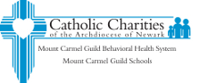

Shelters
Our Supportive Housing programs are designed to help ease their transition from homelessness to independence, setting them up for success — and breaking the cycle of homelessness — when they move out on their own. All Supportive Housing residents continue to have access to our full range of Supportive Services to help them continue to advance their goals and live their dreams.
To go directly to their donate page, click here.
In 1983, religious and business leaders looked out from their buildings and saw people who had no home. They decided that in their community all people should have shelter from the cold and food for the day. In May of 1983 Morris Shelter, Inc. was created as a private, not-for-profit, tax-exempt organization.
To go directly to their donate page, click here.
Montclair Citadel

For 125 years, The Montclair Citadel Corps has been a beacon of hope and a model of ministry in the Name of Jesus in suburban Essex County, New Jersey. Whether it is housing a needy family at our Cornerstone House Shelter, feeding the homeless at our hot meal program, providing emergency assistance, teaching music to children, or serving as a place of worship for those seeking spiritual nurture Montclair Citadel provides something for everyone.
To go directly to their donate page, click here.
As established by Founder, Msgr. Vincent E. Puma, the mission of Eva's Village is to feed the hungry, shelter the homeless, treat the addicted and provide medical and dental care to the poor with respect for the human dignity of each individual.
To go directly to their donate page, click here.
The Apostles’ House is an organization devoted to providing comprehensive social services to homeless women and children and individuals or families at risk of homelessness in Newark and Essex County. The Apostles’ House has been faithfully serving this community since 1982, and celebrated its 30th year of service in 2012.
To go directly to their donate page, click here.
Ocean’s Harbor House is dedicated to assisting homeless, runaway, abused, neglected and abandoned youth, ages 10-21. Our mission is to provide a safe haven and caring environment for vulnerable youth to enable them to unlock their potential and learn skills that will empower them to build healthier lives, relationships and futures.
To go directly to their donate page, click here.
St. Rocco’s
St. Rocco's Emergency Family Shelter provides short-term shelter to homeless women with children including three meals a day. Services include supportive individual counseling, educational workshops, instruction in parenting skills, referral to community resources, assistance with job and housing placement, and referrals for mental health and substance abuse services.
To go directly to their donate page, click here.
HomeFront’s mission is to end homelessness in Central New Jersey by harnessing the caring, resources and expertise of the community. We lessen the immediate pain of homelessness and help families become self-sufficient. We work to give our clients the skills and opportunities to ensure adequate incomes, and we work to increase the availability of adequate, affordable housing. We help homeless families advocate for themselves individually and collectively.
To go directly to their donate page, click here.
Clothing
Soles4Souls was founded as a disaster relief organization after philanthropists and shoe executives provided footwear to those most impacted by The Indian Ocean tsunami in 2004 and Hurricane Katrina in 2005. Soles4Souls was officially formed as a 501(c)(3) non-profit in 2006. We continue to act as second wave responders providing footwear and clothing to those In need during times of disaster.
To go directly to their donate page, click here.
Goodwill NYNJ is a 501(c)(3) nonprofit organization that follows a social enterprise model based on a commitment to what we call the triple bottom line. Our retail infrastructure helps fund our employment and career services, and it also results in positive social and environmental outcomes for the global community.
To go directly to their donate page, click here.
Many veterans don’t have access to the health care services they need, making it difficult to seek proper treatment. You can help veterans obtain the services they need by making a monetary donation or by donating your used clothes, furniture and other household items.
To go directly to their donate page, click here.

GreenDrop has been selected by the American Red Cross, the Military Order of the Purple Heart, the National Federation of the Blind and the Society of St. Vincent de Paul of Philadelphia, to raise funds through the generation and collection of donated clothing and household items. Donated items are converted into critical dollars for these organizations, to assist them in upholding their mission and programs for supporting American veterans, the nation’s blind and neighbors in need.
To go directly to their donate page, click here.
The Rescue Mission of Trenton is a non-profit organization set up exclusively for charitable and educational purposes to help change the lives of those less fortunate in our community.
To go directly to their donate page, click here.
Food
We shelter 50 people nightly, serve 500 meals daily, host 1,000 showers weekly, and provide such support services as food, shelter, case management, counseling, job and life skills training, creative arts workshops, emergency homelessness prevention grants, & permanent supportive housing solutions.
To go directly to their donate page, click here.
Our mission is to fight hunger and poverty in New Jersey by assisting those in need and seeking long-term solutions. We engage, educate and empower all sectors of society in the battle. We fill the emptiness caused by hunger with FOOD, HELP and HOPE.
To go directly to their donate page, click here.
Pierre Toussaint Food Pantry
Goal is to end hunger by providing meals to those in need. We operate through soley through donations and people volunteering their name. Our volunteers are a range of ages starting at thirteen.
To go directly to their donate page, click here.
The Interfaith Food Pantry of the Oranges (IFPO) is a “client choice” food pantry that provides supplemental and emergency food, diapers and toiletries to low-income residents of Orange and East Orange, NJ. IFPO is an all-volunteer, collaborative effort of four religious congregations in Short Hills and South Orange, New Jersey.
To go directly to their donate page, click here.

Since 1982, the Human Needs Food Pantry has provided food, clothing, and other services to people in need who live in Montclair and neighboring communities in Essex County. Our diverse client base includes families and singles who are elderly, disabled, home-bound, unemployed, or underemployed (working poor).
To go directly to their donate page, click here.
The Food Bank of South Jersey exists to provide an immediate solution to the urgent problem of hunger by providing food to needy people, teaching them to eat nutritiously, and helping them to find sustainable ways to improve their lives. We carry out our mission by operating on 7 core values: Collaboration, urgency, diversity, integrity, respect, service, and accountability.
To go directly to their donate page, click here.